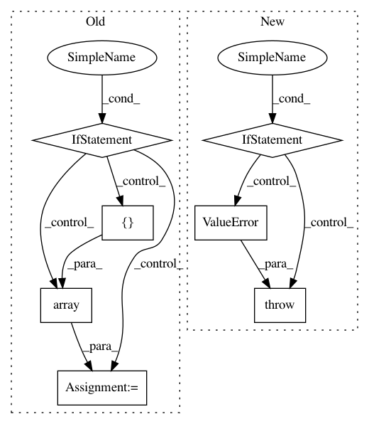

0420057a63473b42e714554e604a12e37e243a37,scipy/spatial/transform/rotation.py,Rotation,__init__,#Rotation#Any#Any#,22
Before Change
// Warn user for zero (eps?) norm and set to identity quaternion,
// which (0,0,0,1) in (x,y,z,w) format
zero_norms = norms == 0
if zero_norms.any():
warnings.warn(Found zero norm quaternions in input,
replacing with identity quaternions.)
self._quat[zero_norms] = np.array([0, 0, 0, 1])
// Normalize each quaternion, ensuring norm is broadcasted along
// each column.
self._quat[~zero_norms] /= norms[~zero_norms][:, None]
@classmethod
def from_quaternion(cls, quat, normalized=False):
After Change
// Raise ValueError for zero (eps?) norm quaternions
zero_norms = norms == 0
if zero_norms.any():
raise ValueError("Found zero norm quaternions in `quat`.")
// Normalize each quaternion, ensuring norm is broadcasted along
// each column.
self._quat[~zero_norms] /= norms[~zero_norms][:, None]
@classmethod
def from_quaternion(cls, quat, normalized=False):
In pattern: SUPERPATTERN
Frequency: 3
Non-data size: 7
Instances
Project Name: scipy/scipy
Commit Name: 0420057a63473b42e714554e604a12e37e243a37
Time: 2018-06-30
Author: adibhar97@gmail.com
File Name: scipy/spatial/transform/rotation.py
Class Name: Rotation
Method Name: __init__
Project Name: scikit-multiflow/scikit-multiflow
Commit Name: 6496c605ad12f3eaac3939804ee8bef0b82a2692
Time: 2019-02-27
Author: aquancva@gmail.com
File Name: src/skmultiflow/trees/multi_target_regression_hoeffding_tree.py
Class Name: MultiTargetRegressionHoeffdingTree
Method Name: partial_fit
Project Name: scikit-multiflow/scikit-multiflow
Commit Name: 6bf1dd3ada59f67c91c815a31d440de61632220e
Time: 2019-02-25
Author: jacob.montiel@gmail.com
File Name: src/skmultiflow/trees/multi_target_regression_hoeffding_tree.py
Class Name: MultiTargetRegressionHoeffdingTree
Method Name: partial_fit